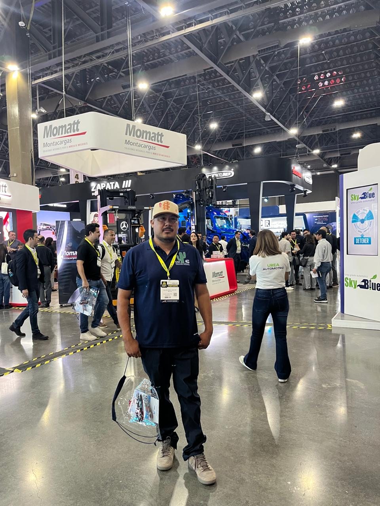

Reparación y cambio de motor
Diagnóstico, ajuste, reconstrucción total o cambio de motor, siguiendo las especificaciones del fabricante.
Especialistas en motores diésel de rango medio a pesado: camiones, flotillas y vehículos de carga. También atendemos particulares con motor diésel.
Desde el mantenimiento preventivo hasta el cambio de motor. En el taller, a domicilio o en carretera.
Diagnóstico, ajuste, reconstrucción total o cambio de motor, siguiendo las especificaciones del fabricante.

Mantenimiento preventivo y correctivo de cajas de velocidades, embragues y volantes.
.jpeg)
Ajuste de coronas y piñones, y cambio de baleros para recuperar la tracción.
.jpeg)
Lectura de códigos de falla con escáner para cotizar solo lo que de verdad necesita tu unidad.
.jpeg)
Alternadores, marchas, cableado y detección de cortos.
.jpeg)
Cambio de aceite y filtros con lubricantes para diésel e inspección multipuntos antes de salir a carretera.
Así es el camino de tu unidad, desde que llega hasta que te la entregamos.
Agendas tu cita o llegas al taller. Abrimos una orden de servicio con los datos de tu unidad y las fallas que reportas.
Un mecánico la inspecciona, la revisa con escáner y hace pruebas mecánicas para encontrar la falla real.
Te enviamos la cotización por correo o WhatsApp. El trabajo no empieza sin tu aprobación.
Reparamos, probamos la unidad y el jefe de taller la revisa. La entregamos con garantía por escrito y factura si la pides.
.jpeg)
Escríbenos con tu ubicación, el tipo de unidad y la falla. Si se puede resolver en el lugar, sale un mecánico con herramienta y las refacciones más probables.


Taller Diesel S.M. abrió en 2019 en la zona industrial de La Paz porque aquí hacía falta un servicio diésel confiable, transparente y bien capacitado. Desde entonces no hemos dejado de trabajar, y la mayoría de nuestros clientes llega por recomendación.
Nuestra misión es resolver las fallas diésel, incluso las más complicadas, para que tus camiones y tu flotilla rindan mejor y duren más, con atención rápida y personalizada.
Diagnosticamos y cotizamos solo lo necesario, sin inflar reparaciones ni esconder fallas.
Te explicamos qué se hizo, con qué piezas y a qué costo, con cotizaciones y facturas claras.
Unidades probadas antes de entregarse y con garantía por escrito.
Respetamos las citas y los tiempos de entrega que te damos.
Un recolector autorizado retira cada 30 días el aceite usado, los filtros y demás residuos, para que nada termine en el drenaje ni en el suelo. Dentro del taller cuidamos el agua, porque en Baja California Sur escasea. Y un motor bien afinado también contamina menos.
Toca cualquier foto para verla en grande.
Estamos en la zona industrial de La Paz, en terreno propio y con espacio para unidades grandes.
C. Balsamina entre Calle Caddebi, Col. La Pitahaya, C.P. 23089, La Paz, B.C.S.
Lunes a sábado, de 8:00 a 18:00
Domingo: cerrado
Efectivo y transferencia bancaria. Factura disponible si la solicitas.